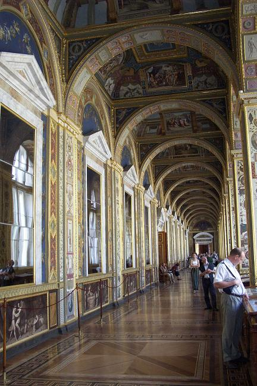
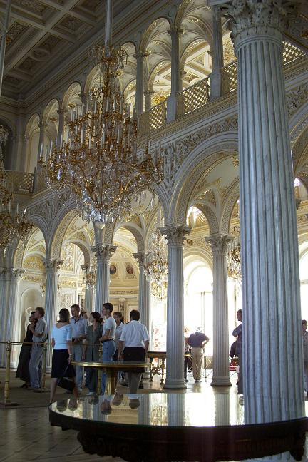
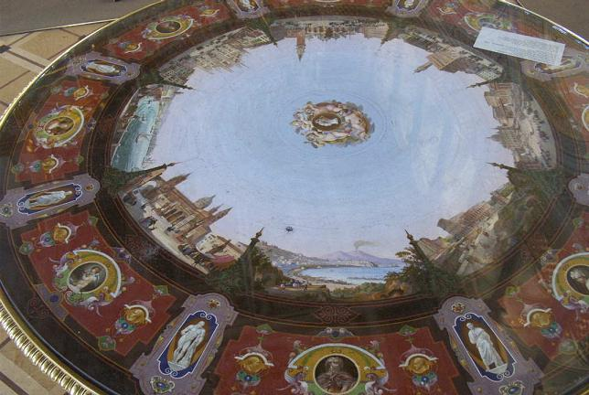
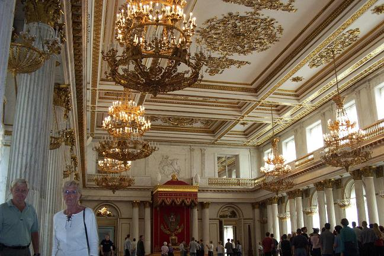
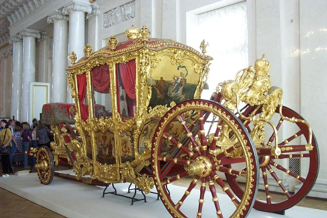
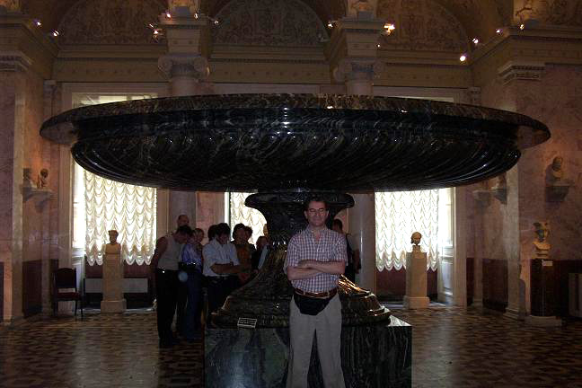

As can be seen in the first picture, even the hallways of the Winter Palace are breathtakingly beautiful in construction and decoration.

The second picture is of a room full of tables made of inlaid polished stones, one of which can be seen up close in the third picture.


A throne room and Imperial carriage are seen in the fourth and fifth pictures.


The last picture shows the grandest of many decorative basins made of polished stone.

Back to St. Petersburg Section
Go to the Homepage